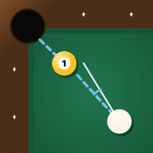

外したずれが分かるビリヤード
外したショットを計算し直して、「あと 0.8° 右なら入りました」と、入る狙いとのずれを見せる9ボールです。
真上から見た台で、手玉を撞いて1番から順に球を落とし、9番を落としたら勝ち。ひとりで、コンピュータと、2人で1台を回して遊べます。配置の練習の問題もあります。
- 外したずれが分かります。狙った球が入らなかったら、同じ強さ・同じ撞点のまま狙いだけを 0.05° ずつ変えて計算し直し、いちばん近い「入る狙い」を探します。「あと 0.8° 右なら、右上のポケットに入りました」「入る幅は 0.45°」と出し、台の上に入る道を点線で重ねます
- 運を入れない動き。球の動きはいつも同じ計算で進めます。同じ配置・同じ狙い・同じ強さなら、いつも同じ結果です。コンピュータも同じ計算で撞きます
- 細かく狙えます。台を押すとその方へ狙いが向き、目盛りのダイヤルを横になぞると細かく回ります。◀ ▶ で 0.1° ずつ。撞点（押し・引き）も選べます
- 同じ配置からもう一度。ひとりの9ボールと配置の練習では「1つもどす」「その狙いで撞き直す」が使えます
- コンピュータは、やさしい・ふつう・つよいの3段。配置の練習は30問（どれも入る狙いの幅が 0.25° 以上あると計算で確かめています）
- 記録：入った割合と、外したずれの平均（日ごとの棒）、勝ち負け
- 登録・課金・通知はありません。記録はこの端末の中だけに保存します。画面のいちばん下に小さな広告が出ます（ゲームの前後に広告をはさまず、画面いっぱいの広告・動画の広告は出しません）